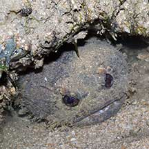
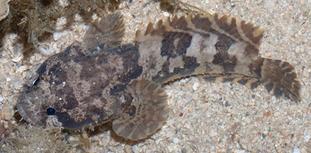
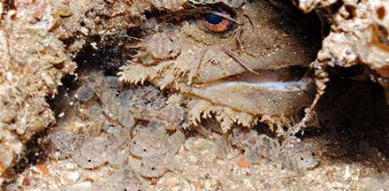
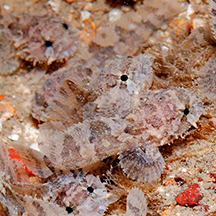

|
|
| fishes text index | photo index |
| Phylum Chordata > Subphylum Vertebrate > fishes |
| Toadfishes Family Batrachoididae updated Sep 2020
Where seen? These bottom-dwelling fishes are commonly seen on all our shores but often overlooked. Skulking under stones, near coral rubble, or half covered in sand and sediments, they are hard to spot. Even out in the open, they look like algae-covered stones. At night, the fish is often spotted by its large eyes that 'shine' red in our torch. Sometimes seen dry out of water at low tide, under large stones, such fishes are still very much alive. There is no need to 'save' them or move them. What are toadfishes? Toadfishes belong to the Family Batrachoididae. According to FishBase: the family has 19 genera and 69 species. They are found in the Atlantic, Indian and Pacific oceans. 'Batrachos' means 'frog' in Greek and members of the toadfish family do indeed croak when distressed. They make these sounds by vibrating the swim bladder. They are commonly called toadfishes instead of frogfishes because the Frogfish is another kind of fish. Features: A toadfish is basically an enormous head on a small body! It has a broad, flat head with large eyes near the top of the head. Three-spined toadfish (Batrachomoeus trispinosus): Those seen about 10-20cm long, grows to about 30cm. Its super wide mouth circles the broad head and is usually camouflaged with fleshy barbels and flaps around the lips. The first dorsal fin has 2-3 spines. It lacks scales and has a tough, leathery smooth skin with mottled patterns. Distinct greyish-brown bars on the sides, well-contrasted markings on the top of its head. There is a pit behind the upper edge of the pectoral fin base.Allenbatrachus reticulatus looks similar and lacks this pit. Sometimes mistaken for stonefish and scorpionfishes. Here's more on how to tell apart fishes that look like stones. |
 Huge eyes often the first sign of the fish hidden under stones. Chek Jawa, May 05 |
 Sisters Island, Aug 07 |
|
| What does it eat? A sluggish fish
that swims poorly, the toadfish is an ambush predator. It waits motionless
for small fish, crabs and prawns to wander by. Suitable prey that
comes near enough is sucked into its wide jaws. These jaws expand
suddenly into a cavernous gape and the prey is usually swallowed whole!
The toadfish's stomach can expand greatly too, to hold large prey.
The jaws are set with bands of small, sharp teeth to prevent prey
from escaping. Baby toadfishes: According to the Encyclopedia of Life, males call mates to their nest with croaking, hooting, grunting and humming sounds they make using their swim bladder; toadfish also make (different) noises when threatened. In some species, male looks after the eggs after they are laid in the nest on on ceilings of narrow or low overhangs of rock or rubble. The male protects the embryos until they are self-sufficient, about 3-4 weeks. WE have observed an adult toadfish with many tiny fishes under the shelter of a rock. |
 Parent fish looking after its young? Beting Bronok, Jul 14 Photo shared by Loh Kok Sheng on his blog. |
 Closer look at the young fishes. Beting Bronok, Jul 14 Photo shared by Loh Kok Sheng on his blog. |
| Human uses: In some places,
members of this family are considered edible delicacies. It is also
sold in the live aquarium trade. Fish in space! The balancing organs of some members of the toadfish family are very similar to ours so they are much studied for medical applications. In fact, some members of this family were sent up in the space shuttle to study the effects of space travel on balance! |
| Three-spined toadfishes on Singapore shores |
On wildsingapore
flickr
|
| Other sightings on Singapore shores |
| Family
Batrachoididae recorded for Singapore from Wee Y.C. and Peter K. L. Ng. 1994. A First Look at Biodiversity in Singapore. *from Lim, Kelvin K. P. & Jeffrey K. Y. Low, 1998. A Guide to the Common Marine Fishes of Singapore. ^from WORMS +other additions (Singapore Biodiversity Records, The Biodiversity of Singapore, etc)
|
Links
References
|